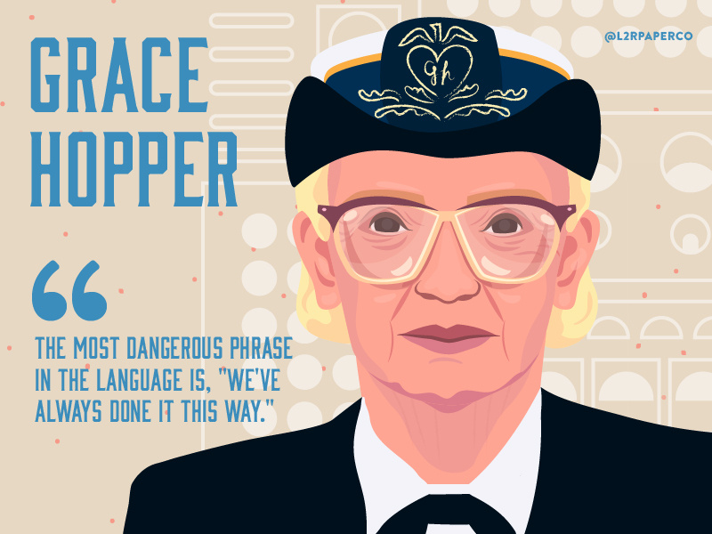

Grace Murray Hooper
The Amazing Grace (1906-1992)
Grace Murray Hooper was an American computer scientist, who was also responsible for developing the first compiler for computer programming language.
During World War II, she joined Navy and was commissioned as a lieutenant.
After her naval duties ended, she joined Remington Rand, where she worked on UNIVAC. She became the Director of automatic programming and sought to find specifications of common business language in computer leading to the discovery of COBOL or Common Business-Oriented Language. This was the first user-friendly computer software and Grace was responsible for advocating the validation process to bring international standardization of computer languages.